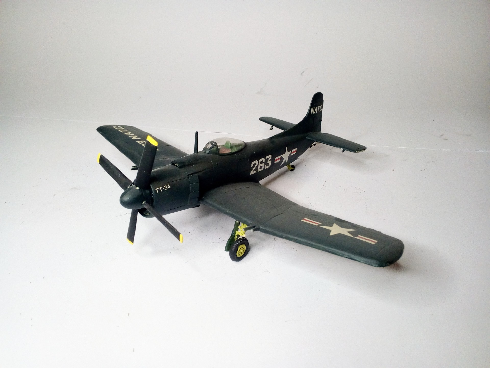
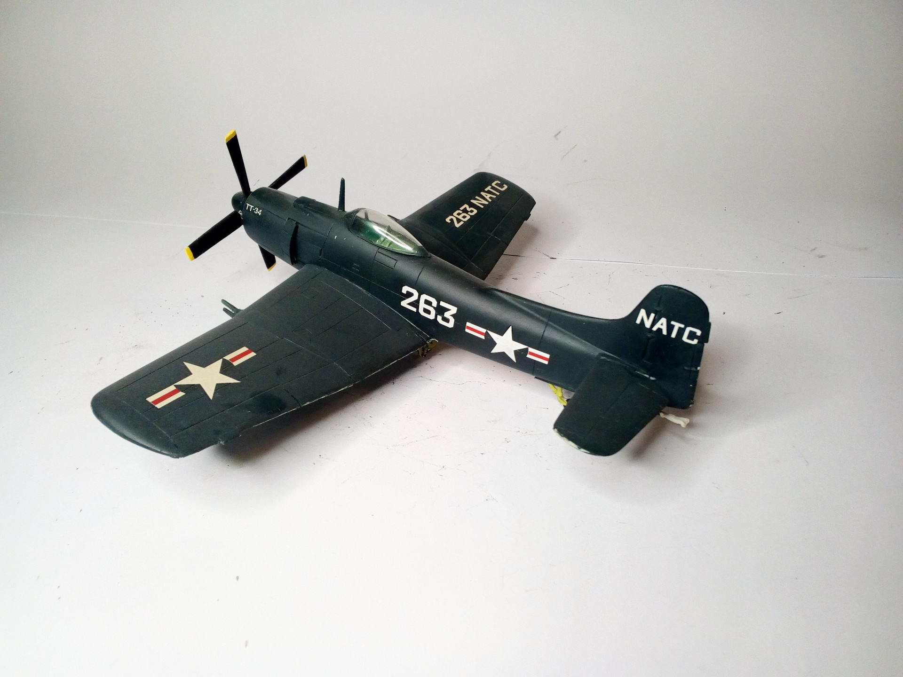

Aerei · scale model archive
Martin AM 1 Mauler
Martin AM 1 Mauler — Kit: MPM, Scale: 1/72. #1/72 #MPM

Photo gallery

English description
#1/72 #MPM
Aerei · scale model archive
Martin AM 1 Mauler — Kit: MPM, Scale: 1/72. #1/72 #MPM

